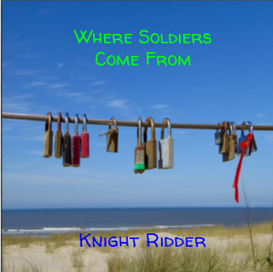

Design a Band Challenge
Album Cover

Where Soldiers Come From comes from a small town in Michigan called Port Huron. The 5
members of Where Soldiers Come From had enrolled into the Michigan Army National
Guard. Their names are Mario Skinnylegs(lead singer), Adam KatFettish(Lead Guitarist),
Jessael Workoutalot(Drummer), Armando Moles(Random Friend) and Erik Zipper(Bass
Guitar Player). They were shipped into the Afghanistan war to check for roadside bombs
in order to keep roads safe for the other troops. There was very traumatic experiences in
war and most of them contracted TBI. They suffered terminal brain damages from all the
explosions happening around them so they got put into a mental institute because
everyone thought the 5 soldiers/band members were crazy but they really weren't. The
army thought it was enough and sent the 5 home. Their trip to Michigan was a misery.
Any loud bang any of the 5 heard they looked for their rifles and yelled "bombs at your
12". Being locked into war then they had a hard time finding peace until they found
something. The only thing they found peace in was indeed music. The 5 would sit in Erik's
basement listening to music. This eventually helped cure their TBI and let them listen to
loud noises again.
While in their hometown they started to debate whether or not to start a music band. At
first they were split because they all had different music tastes but they decided to just
do a little of everything. They started to get into all sorts of music genres. They all liked
to play rap but since Erik didn't and they used his basement to practice than they went
into another way. They went into the way of plain ock. Being war veterans and being
shipped with men around the age of 30 than they got used to listening to rock. They
eventually decided to use their past to come up with their band name of Where Soldiers
Come From. Their first album was named after their favorite movie growing up Knight
Ridder.
Listen To Where Soldiers Come From New Hit Song Knight Ridder